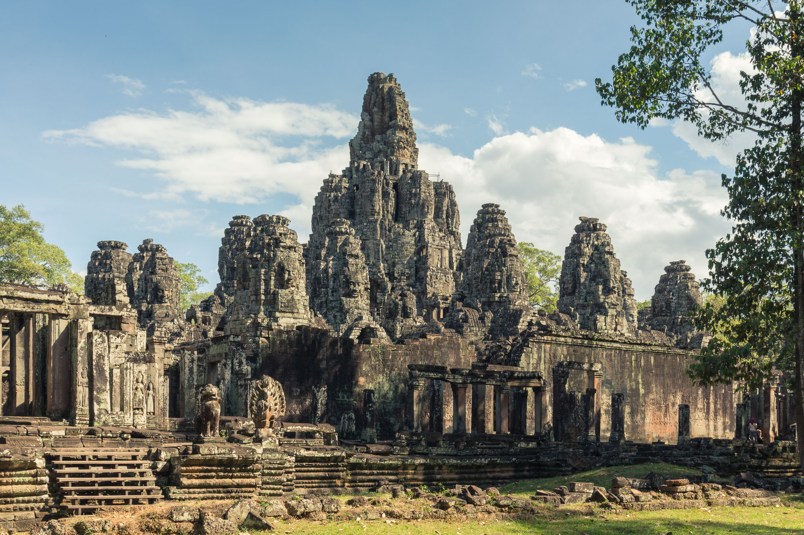
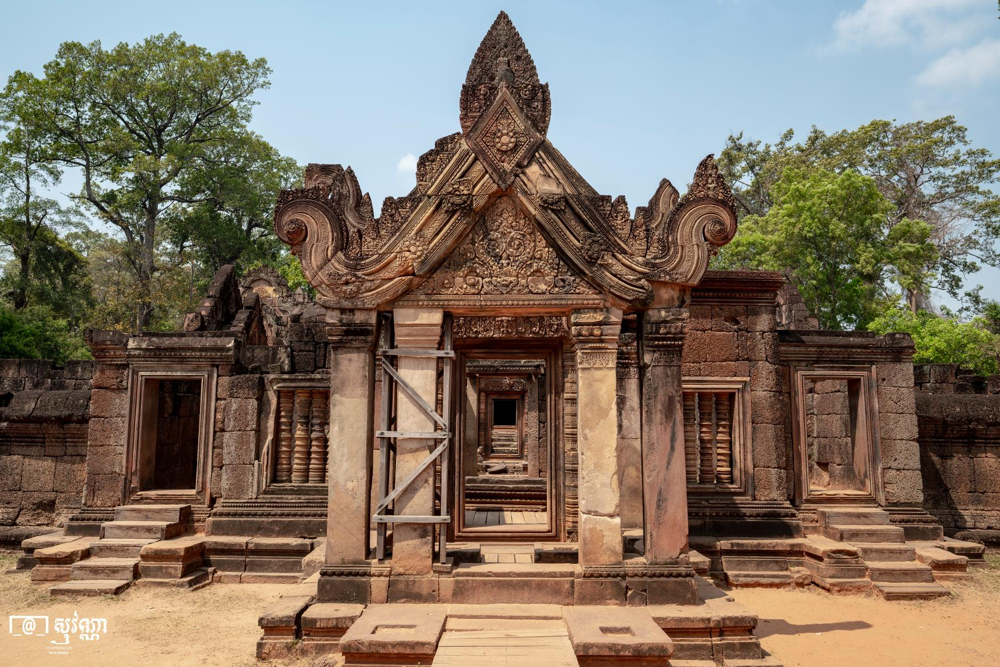
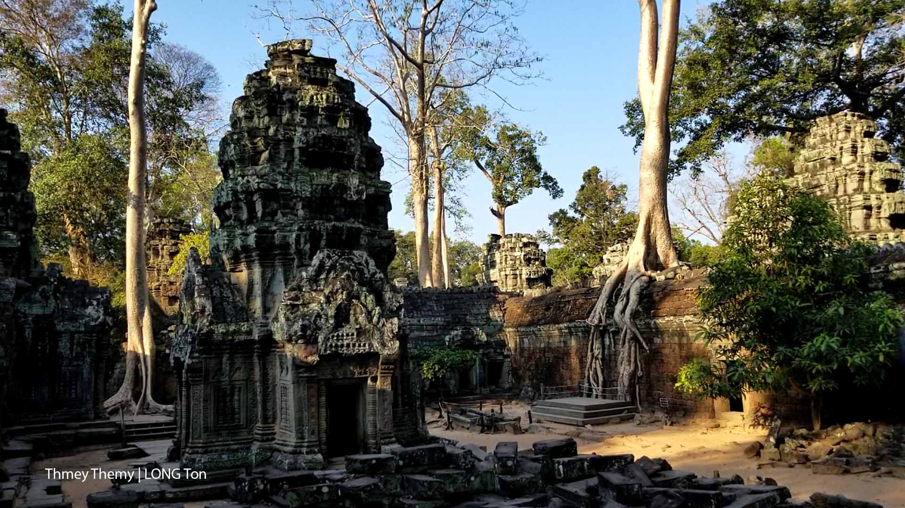

ប្រាសាទបុរាណ
ប្រាសាទបាយ័ន្ត

| ឈ្មោះ: | ប្រាសាទបាយ័ន្ត |
| អ្នកកសាង: | ព្រះបាទជ័យវរ្ម័នទី៧ |
| កាលបរិច្ឆេទកសាង: | ចុងសតវត្សរ៍ទី ១២ |
| ឧទ្ទិសថ្វាយ: | ព្រះពុទ្ធសាសនាមហាយាន |
| ស្ថាបត្យកម្ម: | រចនាបថបាយ័ន្ត |
| ទីតាំង: | ក្រុងអង្គរធំ ខេត្តសៀមរាប |
ប្រាសាទបាយ័នមានទីតាំងស្ថិតនៅចំកណ្តាលនៃរាជធានីអង្គរធំ។ ប្រាសាទនេះកសាងនៅចុងសតវត្សរ៍ទី ១២ និងដើមសតវត្សរ៍ទី ១៣ ដោយព្រះបាទជ័យវរ្ម័នទី៧។ ប្រាសាទនេះមាន តួប៉មនីមួយៗ មានមុខបួន ដែលមានកំពូល ៤៩ និងកំពូលក្លោងទ្វារចូល៥ ទៀត សរុបទាំងអស់ ៥៤ កំពូល ដែលតំណាងឲ្យខេត្តក្រុងខ្មែរ ទាំង ៥៤ នៅសម័យកាលនោះ។ មានអ្នកប្រាជ្ញមួយចំនួនបានគិតថា មុខទាំង ៤ នោះតំណាងឲ្យព្រះពោធិសត្វលោកេស្វរៈនៃព្រះពុទ្ធសាសនាមហាយាន អ្នកខ្លះទៀត គិតថា ជារូបតំណាងព្រះបាទជ័យវរ្ម័នទី៧។ ប្រាសាទបាយ័នមានប្លង់បីជាន់។ ជាន់ទី១ និងទី ២ មានថែវដែលមានចម្លាក់ដ៏ល្អវិចិត្រ។ ប្រាង្គនៅកណ្តាល ១៦ និងស្ថិតនៅជាន់ទី ៣ មានរាងកាកបាទ។ សំណង់ប្រាសាទបាយ័នមានលក្ខណៈស្មុគស្មាញ ទាំងថែវ ផ្លូវដើរ និងជណ្តើរ។ ក្រៅពីទឹកមុខញញឹមនៃរូបបាយ័ន ប្រាសាទនេះមានចម្លាក់ដ៏ល្អប្រណីត ដែលរៀបរាប់ពីរឿងទេវកថានៅថែវខាងក្នុង និងខាងក្រៅ រៀបរាប់ពីជីវភាពរស់នៅរបស់ប្រជាជននៅសម័យអង្គរ មានទាំងផ្សារ ការនេសាទ ពិធីបុណ្យ ល្បែងប្រដាល់ ជល់មាន់ ។ល។ និងថែមទាំងមានការរៀបរាប់ពីព្រឹត្តិការណ៍ប្រវត្តិសាស្រ្តចម្បាំង និងព្យុហយាត្រាជាដើម។ ចម្លាក់នោះឆ្លាក់បានជ្រៅជាងនៅ ប្រាសាទអង្គរវត្ត តែមានលក្ខណៈសាមញ្ញ។ ទិដ្ឋភាពនៃចម្លាក់ បង្ហាញដោយផ្ទាំងតាមជួរ ពីរឬបីជួរ។
ប្រាសាទភ្នំបាខែង
ប្រាសាទភ្នំបាខែងត្រូវបានកសាងនៅឆ្នាំ៩០៧នៃគ.ស ក្នុងរាជកាលព្រះបាទយសោវរ្ម័នទី១។ ប្រាសាទនេះស្ថិតនៅចំពីលើកំពូលភ្នំធម្មជាតិមួយ ដែលមានទីតាំងនៅចំកណ្តាលទីក្រុងយសោធរបុរៈ ឬអង្គរទី១ហើយស្ថិតនៅចន្លោះប្រាសាទអង្គរវត្ត និងក្រុងអង្គរធំ។ ចាប់ពីជើងភ្នំរហូតដល់កំពូលនៃប្រាសាទមានកម្ពស់ ៧៨ម៉ែត្រ ប្រាសាទនេះស្ថិតនៅចន្លោះភ្នំពីរទៀតដែរគឺ ភ្នំក្រោម និងភ្នំបូក[១]។ ប្រាសាទភ្នំបាខែងជាប្រាសាទមួយស្ថិតនៅលើភ្នំធម្មជាតិ ដែលគេចាត់ទុកជា ប្រាសាទភ្នំមានតួប៉មប្រាំខ្វែងគ្នា និងមានប្រាំថ្នាក់។ ប្រាសាទនេះស្ថិតនៅខាងឆ្វែងដៃផ្លូវពី ប្រាសាទអង្គរវត្តទៅ ប្រាសាទបាយ័ន ជាកន្លែងដែលអាចទាក់ទាញភ្ញៀវទេសចរបានយ៉ាងច្រើននៅពេលថ្ងៃលិច។ ប្រាសាទនេះកសាងឡើងនៅចុងសតវត្សរ៍ទី៩ និងដើមសតវត្សរ៍ទី១០ នៅរាជព្រះបាទយសោវរ្ម័នទី១ (៨៨៩-៩១០) ដែលគោរពព្រហ្មញ្ញសាសនា។ ភ្នំបាខែងមានកំពស់ ៦៥ម៉ែត្រ។ ប្រាសាទភ្នំបាខែងមានកំពូល ១០៩ និងមានកំពស់ ៤៥ម៉ែត្រ។ ប្រាសាទនេះតំណាងឱ្យភ្នំព្រះសុមេរុ។ ប្រាសាទនេះមាន៧ជាន់ គឺជាន់ក្រោម ថ្នាក់ទាំងប្រាំ និងជាន់លើ ដែលតំណាងឱ្យឋានសួគ៌៧ជាន់របស់ ព្រះឥន្ទនៅក្នុងទេវកថារបស់ព្រហ្មញ្ញសាសនា។ កនែ្លងដែលភ្ញៀវទេសចរបរទេស តែងតែមកពពាក់ពពូនគ្នា មុនពេលដែលពួកគេត្រូវបញ្ចប់ ដំណើរទេសចរណ៍នៅលើទឹកដី ខេត្តសៀមរាប មុនពេល ដែលរាត្រីកាលមកដល់នោះ គឺប្រាសាទភ្នំបាខែង ទីនោះគឺជាទីប្រជុំនូវភ្ញៀវទេសចរ រាប់រយនាក់ក្នុងមួយថៃ្ងៗ ដើម្បីមើលថៃ្ងលិច និងមើលទេសភាព នៅតំបន់អង្គរស្ទើរតែទាំងមូល ។

| ឈ្មោះ: | ប្រាសាទភ្នំុបាខែង |
| អ្នកកសាង: | ព្រះបាទយសោវរ្ម័នទី១ |
| កាលបរិច្ឆេទកសាង: | ឆ្នាំ៩០៧នៃគ.ស |
| ឧទ្ទិសថ្វាយ: | ព្រហ្មញ្ញសាសនា |
| ស្ថាបត្យកម្ម: | រចនាបថបាខែង |
| ទីតាំង: | ក្រុងអង្គរ ខេត្តសៀមរាប |
ប្រាសាទបន្ទាយស្រី

| ឈ្មោះ: | ប្រាសាទបន្ទាយស្រី |
| អ្នកកសាង: | ព្រាហ្មណ៏យជ្ញវរាអាហៈ |
| កាលបរិច្ឆេទកសាង: | ឆ្នាំ៩៦៧នៃគ.ស |
| ឧទ្ទិសថ្វាយ: | ព្រាហ្មញ្ញណ៍សាសនា |
| ស្ថាបត្យកម្ម: | រចនាបថបន្ទាយស្រី |
| ទីតាំង: | ភូមិបន្ទាយស្រី ឃុំបន្ទាយស្រី(ឃុំខ្នារសណ្តាយ) ស្រុកបន្ទាយស្រី ខេត្តសៀមរាប |
ប្រាសាទបន្ទាយស្រី កសាងក្នុងរាជរបស់ព្រះបាទរាជេន្ទ្រវម៌្មទេវ-ទី២ (រាជេន្រ្ទវរ្ម័ន) និងព្រះបាទជយវម៌្មទេវ-ទី៥ (ជយវរ្ម័ន) នៅសតទី១០ ដោយព្រះរាជគ្រូនាម យជ្ញវរាហ ដើម្បីឧទ្ទិសថ្វាយព្រះឥសូរនិងព្រះនរាយណ៍។ ប្រាសាទនេះ មានភាពល្បីល្បាញផ្នែកចម្លាក់ ដែលមានក្បាច់រចនាល្អដាច់គេ។ ទឹកដៃដ៏វិចិត្ររបស់ជាងចម្លាក់ តែងតែត្រូវបានទេសចរមកពីគ្រប់ទិសទីកោតសរសើរ។
ប្រាសាទបន្ទាយស្រី .ស្ថិតនៅក្នុងភូមិបន្ទាយស្រី ឃុំបន្ទាយស្រី ស្រុកបន្ទាយស្រី ខេត្តសៀមរាប ដែលចម្ងាយប្រមាណ ៣៩គីឡូម៉ែត្រភាគខាងជើងទីរួមខេត្តសៀមរាប ឃ្លាតពីស្រះស្រង់ ២៧គីឡូម៉ែត្រនិងមានចំងាយ៣២គីឡូម៉ែត្រពីប្រាសាទអង្គរវត្តតាមផ្លូវឆ្ពោះទៅ ភ្នំគូលេន។ ប្រាសាទបន្ទាយស្រីគឺជាប្រាង្គប្រាសាទមួយក្នុងចំណោមប្រាសាទជាច្រើននៅ ខេត្តសៀមរាប អង្គរដ៏ល្បីល្បាញនៅក្នុង ប្រទេសកម្ពុជា ក៏ដូចជានៅលើ ពិភពលោកដែរ ដែលបានទាក់ទាញភ្ញៀវទេសចរជាតិ និងអន្តរជាតិយ៉ាងច្រើនកុះករមកពីតំបន់ជាច្រើន។ ក្រុមភ្ញៀវទេសចរដែលបានទៅទស្សនាប្រាង្គ ប្រាសាទអង្គរវត្ត និងប្រាសាទដទៃទៀតនៅក្នុងទឹកដីនៃ ខេត្តសៀមរាប តែងតែឆ្លៀតចំណាយពេល ធ្វើដំណើរក្នុងរយៈចម្ងាយដ៏ឆ្ងាយពីទីរួមខេត្ត ។
ប្រាសាទតាព្រហ្ម
ប្រាសាទតាព្រហ្មត្រូវបានគេស្គាល់ច្រើនថាជាប្រាសាទដើមឈើ ស្ថិតនៅក្នុងព្រៃ មានកសិណទឹកព័ទ្ធជុំវិញពីរជាន់ ។ ប្រាសាទនេះមានទីតាំងស្ថិតនៅវង់តូច ទៅតាមផ្លូវទ្វារជ័យ បន្ទាប់ពីប្រាសាទតាកែវប្រហែល១គីឡូម៉ែត្រ ហើយមានកំពែងជាប់នឹងកំពែងប្រាសាទបន្ទាយក្តីប៉ែកពាយ័ព្យ ។ ប្រាសាទតាព្រហ្មកសាងឡើងក្នុងឆ្នាំ១១៨៦ ដោយព្រះបាទ ជ័យវរ្ម័នទី៧ គោរពដល់ព្រះពុទ្ធសាសនាមហាយាន ហើយបើតាមសិលាចារឹកនៃប្រាសាទនេះ គឺដើម្បីឧទ្ទិសដល់គុណព្រះមាតារបស់ព្រះអង្គ ក្រោមរូបភាពប្រាជ្ញាបារមីតា។

| ឈ្មោះ: | ប្រាសាទតាព្រហ្ម |
| អ្នកកសាង: | ព្រះបាទជ័យវរ្ម័នទី៧ |
| កាលបរិច្ឆេទកសាង: | ឆ្នាំ១១៨៦នៃគ.ស |
| ឧទ្ទិសថ្វាយ: | ព្រះពុទ្ធសាសនាមហាយាន |
| ស្ថាបត្យកម្ម: | រចនាបថតាព្រហ្ម |
| ទីតាំង: | ក្រុងអង្គរ ខេត្តសៀមរាប |